The slide of the lecture is on the left, the same figure on the right, computed in the browser from the same data. The ▶ button moves the parameter step by step.
Dictionaries · Labelled Data and Evaluation · Language Models: FinBERT and LLMs · Embeddings as Features · Look-Ahead Bias and Memorisation · From Sentiment to a Trading Signal · Sentiment Scores Are Estimates · Case Study: Can ChatGPT Forecast Stock Returns? · AI for Scientific Discovery
Dictionaries
Negative for a Psychologist, Neutral for an Accountant
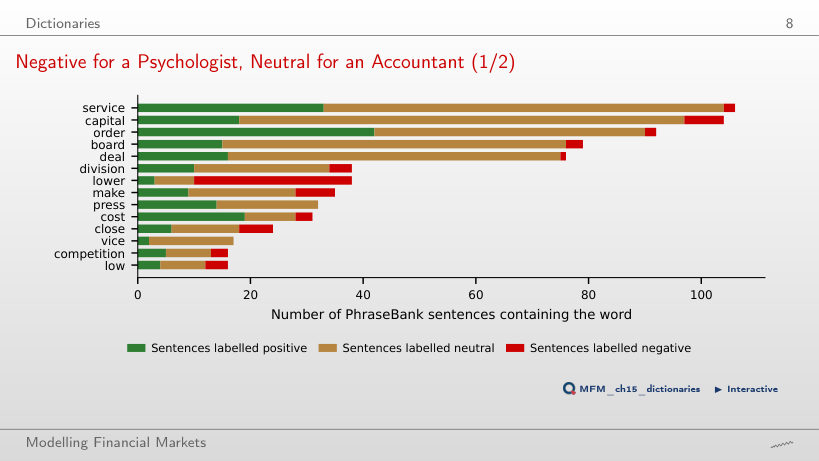
Answer
Rarely. "Service" occurs in 106 Financial PhraseBank sentences, "capital" in 104 and "board" in 79; 98%, 93% and 96% of them are not labelled negative. The exception is "lower": only 26% of its sentences are not negative, although "lower costs" is good news.
Labelled Data and Evaluation
Eleven Classifiers, Two Data Sets: No Single Winner
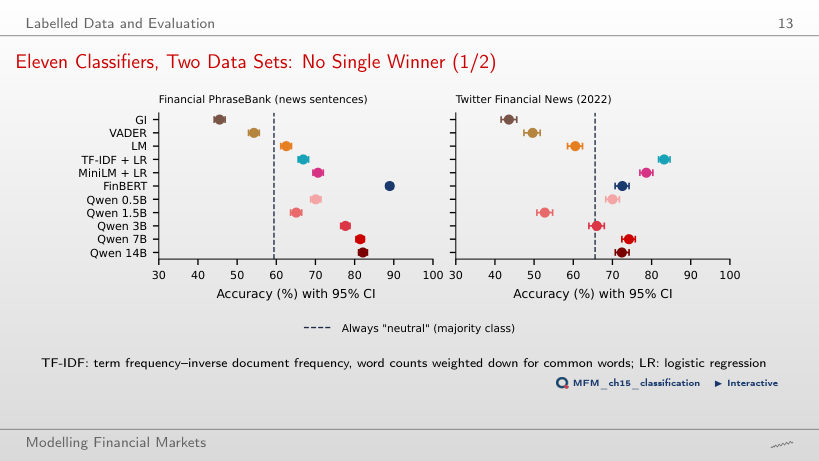
Answer
TF-IDF + logistic regression, with 83.2%. Together with MiniLM + LR, it is one of the two methods trained on Twitter labels. FinBERT has 72.5%, zero-shot Qwen2.5-7B 74.2%, and all three dictionaries stay below the "always neutral" benchmark (66%).
Language Models: FinBERT and LLMs
Bigger Is Not Always Better
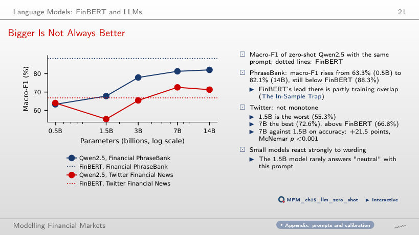
Answer
Not monotonically. The 1.5B model is the weakest (55.3%) and 7B the best (72.6%), above FinBERT (66.8%). The accuracy of 7B exceeds that of 1.5B by 21.5 percentage points (McNemar test: p < 0.001). With prompt P1, the 1.5B model answers "neutral" for only 23% of the headlines.
Embeddings as Features
Can Generic Text Vectors Measure Sentiment?
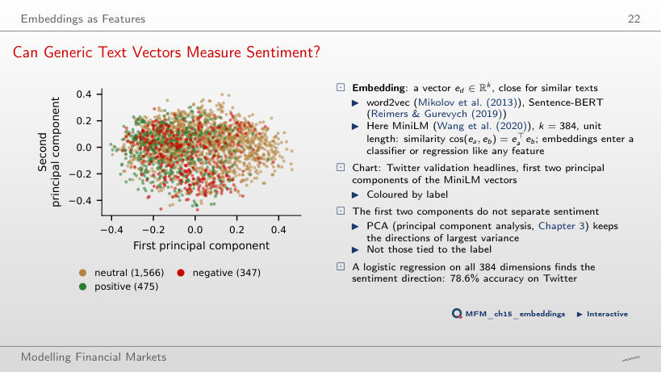
Answer
No. PCA keeps the directions of largest variance, not those related to the label: the best direction in the plane of the first two components gives an AUC of only 0.64 between positive and negative headlines. A logistic regression on all 384 dimensions reaches 78.6% accuracy on Twitter.
How Many Labels Do You Need?
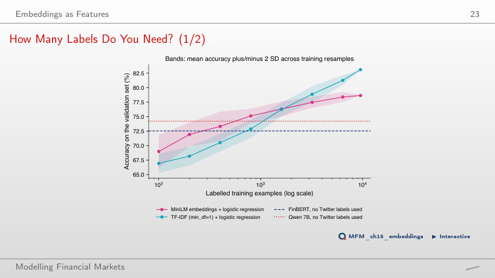
Answer
About 400. With 100 labels its accuracy is 69.0%, below FinBERT (72.5%). TF-IDF starts lower (66.9%) but reaches about 83% with all 9,543 labels, against 78.6% for embeddings.
Look-Ahead Bias and Memorisation
Memory Measured: Months Yes, Days No
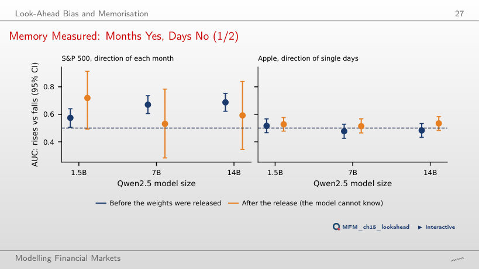
Answer
Partly. On the 296 months before the release, the AUC is 0.69 (CI [0.62; 0.75]) for 14B and 0.67 for 7B. For single days of Apple, the AUC stays between 0.48 and 0.52. The 23 months after the release give intervals too wide to conclude: about 101 months would be needed.
From Sentiment to a Trading Signal
The Timestamp Problem: Dates, Not Times
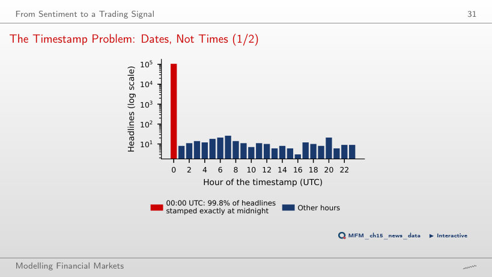
Answer
No. 99.8% of the headlines are stamped exactly 00:00 UTC, so the source gives only the date. The returns of days d and d+1 may therefore still contain the reaction, and the first safe forecast is the return of day d+2.
Reaction versus Prediction: Headlines Describe Prices
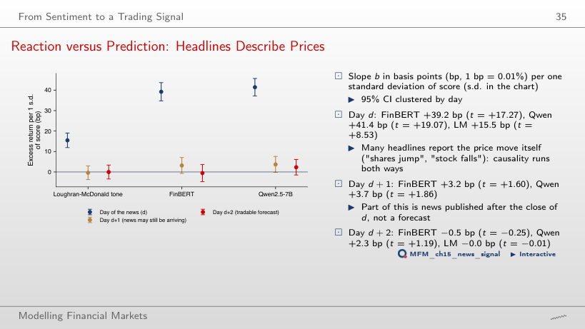
Answer
No. On day d the slopes are large: FinBERT +39.2 bp (t = 17.27) and Qwen +41.4 bp (t = 19.07). On day d+2 they are −0.5 bp for FinBERT, +2.3 bp for Qwen and −0.0 bp for LM, all with |t| < 2. Many headlines report the price move itself.
Cumulative Strategy Returns: No Net Profit
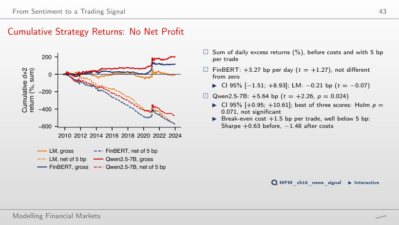
Answer
No. The break-even cost is 1.5 bp per trade. With positions on 95% of the days and 20 bp per active day, the net mean is −13.36 bp a day, and the Sharpe ratio falls from +0.63 to −1.48.
Sentiment Scores Are Estimates
PPI on Twitter Headlines: the Bias Correction Is the Main Gain
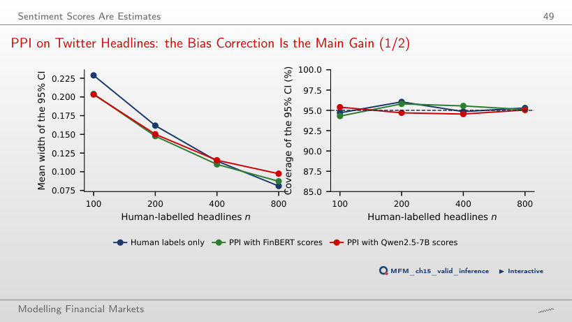
Answer
No: it is a bias, not noise. PPI subtracts the mean bias estimated on the labelled texts and keeps nominal coverage (94.3% at n = 100). The interval narrows only a little: 0.204 with PPI against 0.229 with human labels only.
Case Study: Can ChatGPT Forecast Stock Returns?
Which Models Read the News Right, and Which Earn the Drift
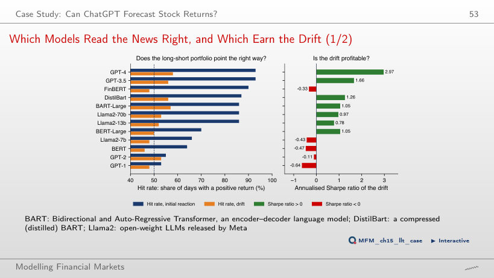
Answer
No. FinBERT gets the reaction right on 90% of the days, but the Sharpe ratio of its drift is −0.33. Of the seven models with hit rates of 86–93%, only GPT-4 (2.97) and GPT-3.5 (1.66) also have a large Sharpe ratio. The models with hit rates of 53–66% have negative Sharpe ratios.
AI for Scientific Discovery
The Specification Curve: Is It Different from Noise?
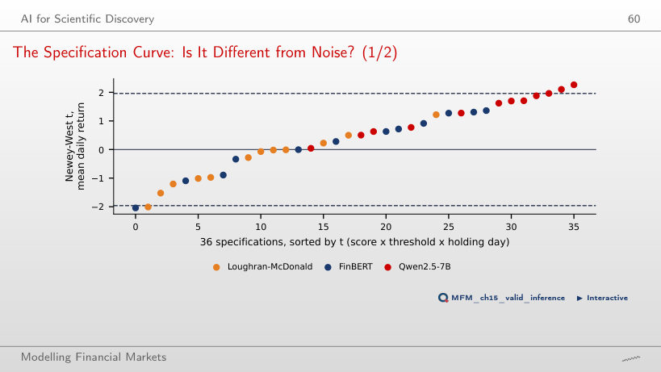
Answer
No. Under the joint null, with the signs of the positions flipped at random in blocks of 10 days, the probability of at least 3 specifications with t > 1.96 is 0.113, and that of a median t at least as high as 0.50 is 0.207. No specification passes the Bonferroni cut-off, |t| > 3.20.
Labelled texts: Financial PhraseBank (Malo et al., 2014) and Twitter Financial News (2022). Dated headlines: FNSPID (Dong, Fan and Peng, 2024), 16 US stocks, 2009–2023; EODHD daily prices. The scores of the dictionaries, FinBERT, the Qwen2.5 models, MiniLM and TF-IDF are those computed in the chapter. Case study: Lopez-Lira and Tang (2026), Table 5.